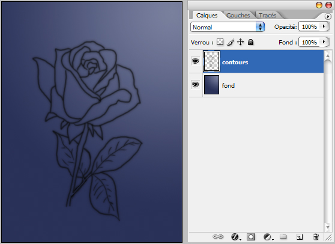
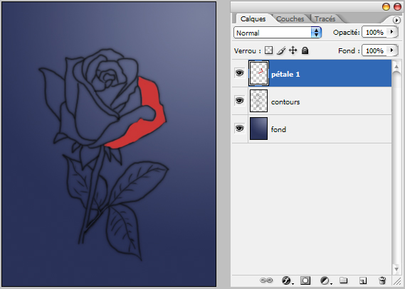
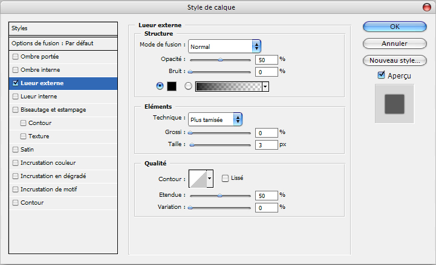
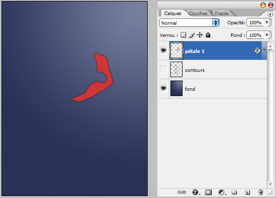
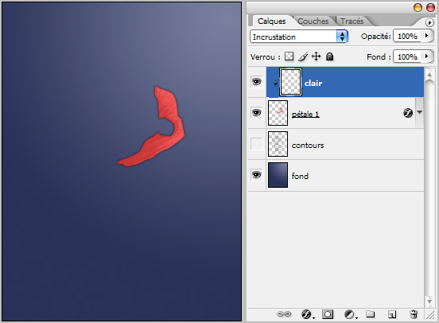
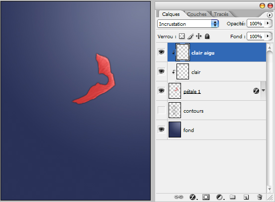
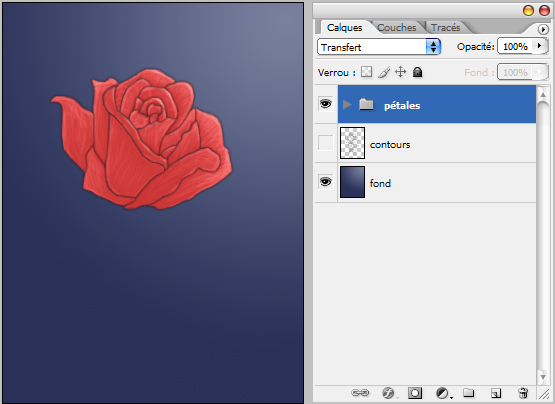
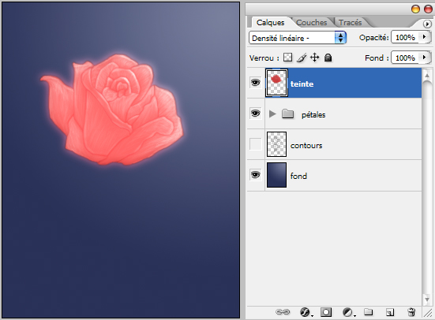

Retour au site
Didacticiel: la peinture numérique
par Tiger-222
Dans ce petit tutoriel, je vais
vous montrer ma méthode pour faire de la peinture numérique. C'est une méthode parmis tant d'autres, mais je pense que pour ceux qui cherchent encore leur technique, il faut tout essayer.
On ne le répète jamais assez: il faut travailler pour découvrir , apprendre et maitriser, si vous ne vous contentez que de copier, cela ne vous avancera à pas grand chose...
Sur ce, bonne lecture.
---------
J'utilise Photoshop pour ce travail.
---------
Nouveau doccument, je fais un dégradé pour situer la lumière (et souvent pour donner les tons ).
Puis sur un nouveau calque je dessine mon élément, en l'occurence une rose.
Lors du dessin et même lors des colorisations, je laisse le flux à 50%, je change seulement l'opacité, variant entre 10% et 90% (tout se passe avec le pinceau).

Sur un autre calque je dessine un pétale avec une seule couleur unie, avec comme opacité 90%.

Puis je lui applique une lueur externe comme option de fusion. Voici les paramètres (que je ne change jamais quelque soit le dessin, à moins que l'élément soit vraiment petit, et là je change la taille à 2, voir 1).

Et voici ce que ça donne:

Sur un autre calque, je vais dessiner quelques éclaircissements à l'aide d'une brosse un peu floue, d'opacité 40%. Mettez ce calque en mode Incrustation puis mettez-le en masque d'écrêtage (CTRL+G). Je le nomme "clair". Mainenant je vais éclaircir les zones susceptibles d'être éclairées (la lumière venant d'en haut à droite). Pour cela, je prends la couleur blanche.

Puis sur un autre calque en mode Incrustation que je nomme "clair aigu", je dessine les zones normalement plus claires. Je garde la même brosse, mais je la réduis (dans ce cas là la taille est de 1) avec une opacité de 10%. Mettez-le en masque d'écrêtage.

Tout seul, cela ne paie pas de mine, mais au final voici ce que ça donne après plus d'une heure de travail (je travail chaque pétale sur de nouveaux calques afin de pouvoir les manipuler à ma guise, j'utilise donc 3 calques différents pour chaque élément que je dessine):

Pour la finalisation, je joue sur les modes de calque, en dupliquant par exemple les pétales, j'applique un flou gaussien de 5 et je mets ce calque en mode [densité linéaire -], cela vous donnera ceci:

Et ainsi de suite pour les feuilles et la tige. J'espère avoir été clair.
Voici au final ce que cela peut donner:
PS: dans cet exemple je vous ai parlé de l'éclaircissement des éléments, mais c'est exactement la même chose pour assombrir, il suffit de prendre du noir comme couleur.
Le Mardi 06 Juin 2006. Edité le Dimanche 11 Juin 2006. (c) Tiger-222.
Retour au site